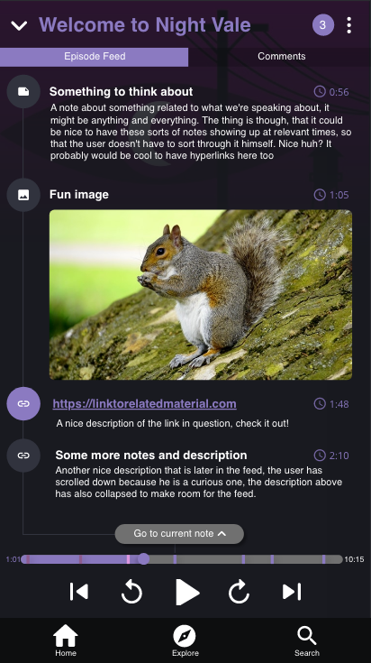
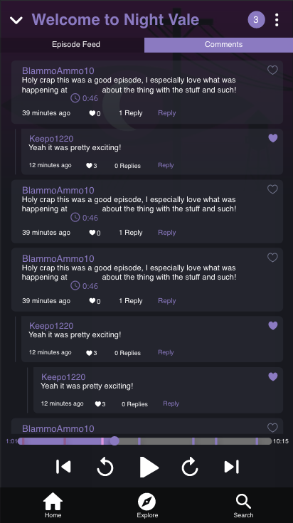

School project. Course Media Technology and Interaction Design
Problem
A Social interaction is missing between users and to the creators in podcast applications.
It should be easy to share information within the app and for the listeners to comment and participate in the discussions.
Podcast creators should be able to refer to specific content directly in the application instead of referring user to other social channels.
Lets enrich the podcast experience beyond sound.
Solution
Creating a podcast application that also focuses on the social interaction between users and creators.
Episode feed: Where the podcast creator can publish content that is referred in the episode at the exact time where they talk about it.
Comments: Here users can comment on specific timestamps of the episode and start discussion with each other and with the creator.


Process
In our work process we used the Double Diamond process, which stands for four distinct phases – Discover, Define, Develop and Deliver.
Discover
Heuristic evaluation
User observation
Review of product reviews for Apples Podcast application
Define
Defining User goals
Defining Design Requirements
Creating personas and scenarios. We sent out a questionnarie about usage of the application etc. With over 60 answers different personas and scenarios were built.
First sketches on paper and digital
Develop
The develop phase consisted of several different methods and phases before getting to the final prototype.
Parallel prototyping
Design Review
Prototype merging
Mockups
User test
Deliver
Compilation of all the components and properties of the product for a final product devilvery.
Creators can add show notes to a specific episode and timestamp. This makes it easier for the listener to see what they are referring to in the podcast.
Enables the option of commenting within the episode (connected to a certain timestamp) and from this also be able to create discussions.
You can like certain comments or choose to reply on a comment.
The episode feed is changed and updated with the playback of the episode.
indication inform of a color circle if the episode is downloaded offline.